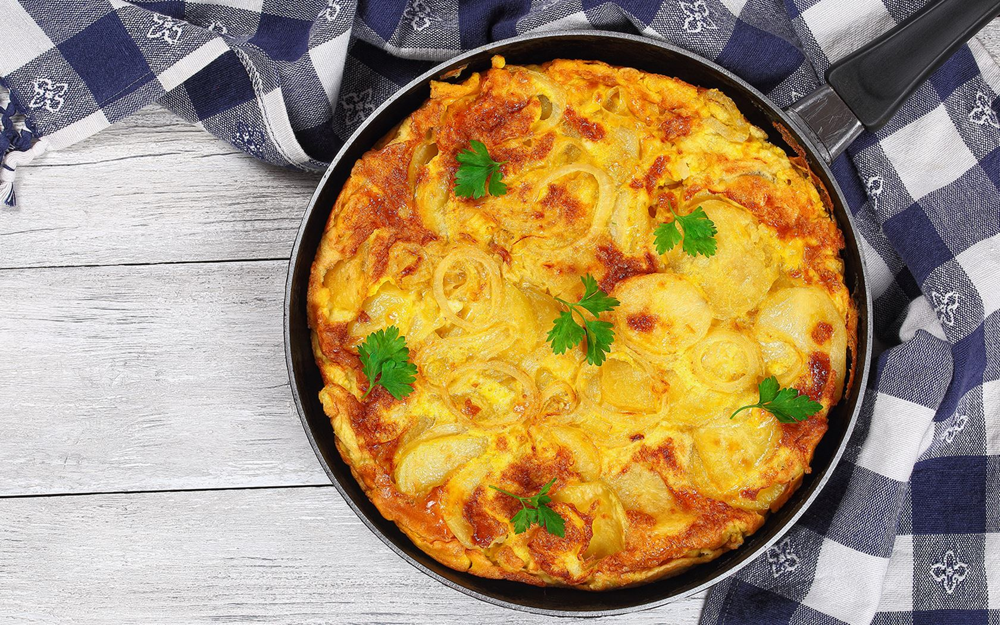

Spanish Omelette (Tortilla Española) Recipe
Ingredients
- 4 large potatoes, peeled and thinly sliced
- 1 large onion, thinly sliced
- 6 large eggs
- 1/2 cup olive oil
- Salt, to taste
- Black pepper, to taste (optional)
Instructions
-
Heat the olive oil in a large
skillet over medium heat.
-
Add the potatoes and cook
gently, stirring occasionally, until they are soft but not
browned.
-
Add the onions to the skillet
with the potatoes and cook until both are tender.
-
Remove the potatoes and onions from the skillet using a slotted
spoon, letting excess oil drain off. Set aside to cool slightly.
-
In a large bowl,
beat the eggs with salt and
pepper to taste.
-
Gently mix the slightly cooled potatoes and onions into the
eggs.
-
Pour off excess oil from the
skillet, leaving a thin layer to prevent sticking.
-
Return the skillet to medium heat and
pour in the egg mixture.
-
Cook for 5-7 minutes, until the bottom is set but the top is
still slightly runny.
-
Place a large plate over the skillet, carefully flip the
omelette onto the plate, then slide it back into the skillet to
cook the other side.
-
Cook for another 3-5 minutes until fully set and golden on both
sides.
-
Turn off the heat and let the omelette cool slightly before
slicing and serving.